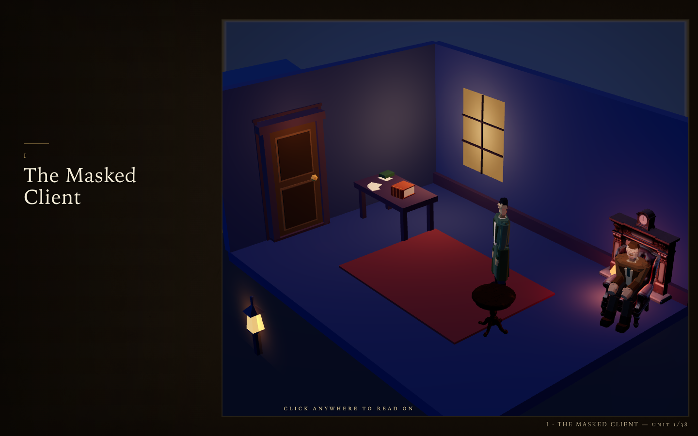
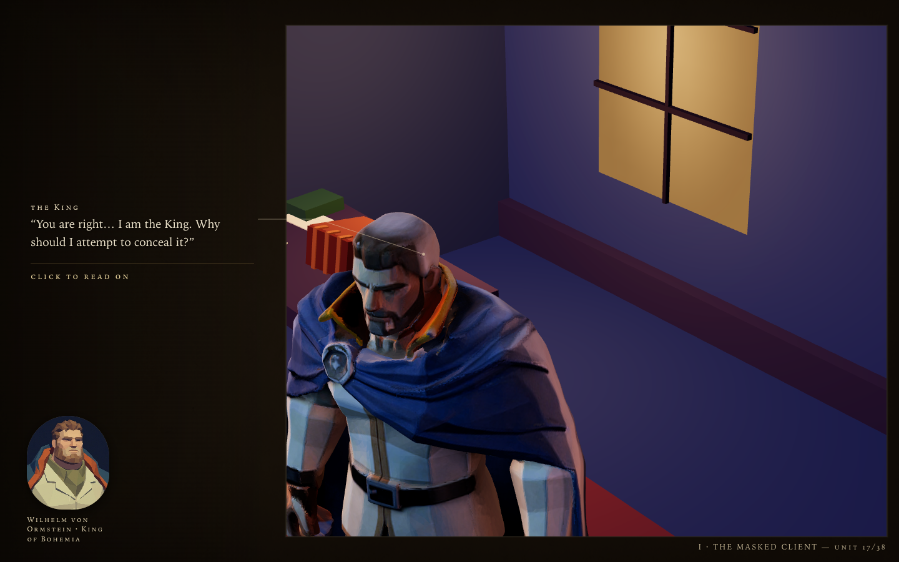
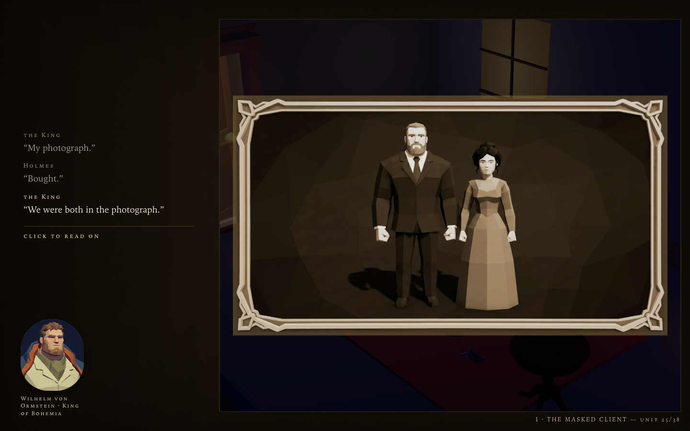

An Interactive Book · A Scandal in Bohemia
Gaslight Streets — remade Beat I: The Masked Client
An interactive book — the diorama performs, Doyle's own words sit in the margin, and the page turns when you act.
How to Read
Click to read on·press-and-hold the note·click the mask / the index / the door. Sound on recommended.
Preview



▶The Living Book — Beat I the same thirty-eight units, rebuilt 2D-first: the painted plate IS the set, and every moving thing on it is a painted cut-out.